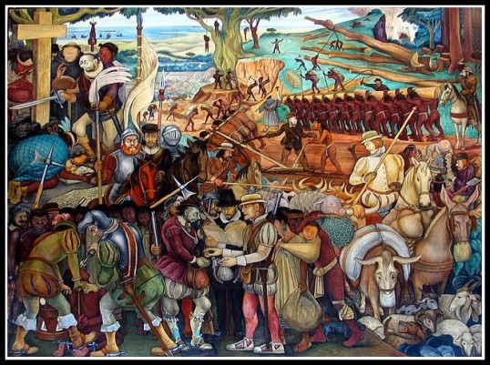
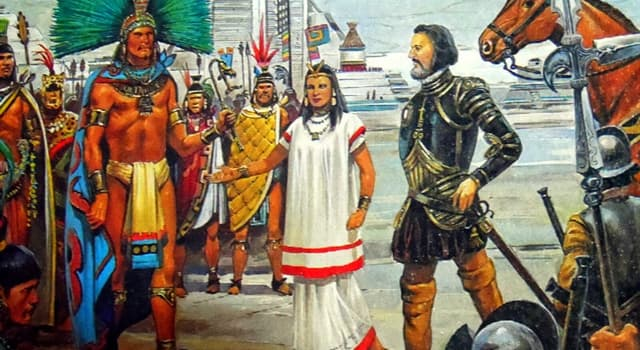
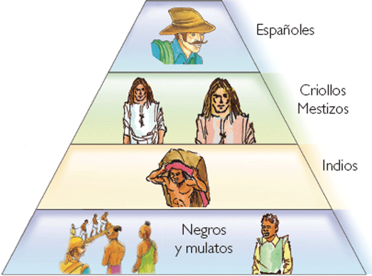
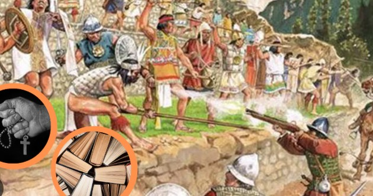
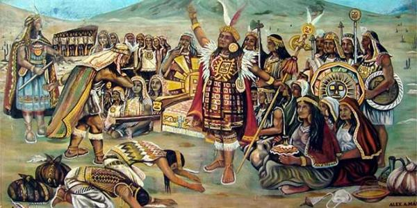

La conferencia explora la complejidad política del virreinato, destacando las estrategias diplomáticas de los Incas y su resistencia frente a los españoles. También analiza cómo las alianzas y negociaciones marcaron el destino de Perú y Bolivia durante este periodo histórico. Finalmente, se aborda el impacto cultural y político que aún persiste en ambas naciones.
Pizarro aprovechó las alianzas con los Incas y otros grupos locales para obtener legitimidad y poder. Los Incas y curacas no eran ingenuos; buscaban alianzas estratégicas para no quedar en el lado perdedor. La caída del Imperio Inca no fue tan sencilla como se presenta; hubo una búsqueda de situaciones políticas favorables. Desde tiempos prehispánicos, las etnias buscaban aliarse con los vencedores en conflictos, reflejando una estrategia política constante.
Se explica que aunque Huascar y Atahualpa eran hermanos, pertenecían a diferentes panacas, lo que generó conflictos entre clanes familiares. Se describe el proceso de momificación de los Incas y cómo continuaban viviendo en un contexto ritual, siendo cuidados y consultados por sus descendientes. Se menciona el culto que existía alrededor de las momias, que participaban en festivales y eran tratadas como figuras vivas dentro de la sociedad incaica. Se hace referencia a cómo las 12 panacas elegían representantes, lo que refleja la complejidad política y social durante los 300 años del virreinato.
Los Incas se rebelaron contra la herencia española y establecieron un reino en Babamba, donde continuaron su resistencia. La existencia Inca no terminó rápidamente; resistieron durante aproximadamente 40 años después de la captura de Atahualpa. La caída del Imperio Inca no fue solo por la conquista española, sino también por la presión de otros grupos étnicos. Los Incas negociaron su incorporación a través de pactos, en lugar de ser completamente conquistados. Tupac, hijo del Inca, firmó un tratado de alianza con los virreyes, mostrando que los Incas buscaban alianzas incluso después de la caída de Atahualpa.
Los encomenderos buscaban ganar poder a través de la guerra y la negociación, pero se dieron cuenta de que no podían vencer a quienes reclamaban tierras. Se menciona cómo los encomenderos desarrollaron estrategias para obtener privilegios y tierras mediante negociaciones astutas. Se aborda el matrimonio de Tupac y la figura de Beatriz Clara Coya, resaltando las presiones y obligaciones sociales detrás de su unión. Se discute cómo los españoles intentaron casarse con princesas incas para fortalecer sus lazos y poder, reflejando las dinámicas de poder de la época.
